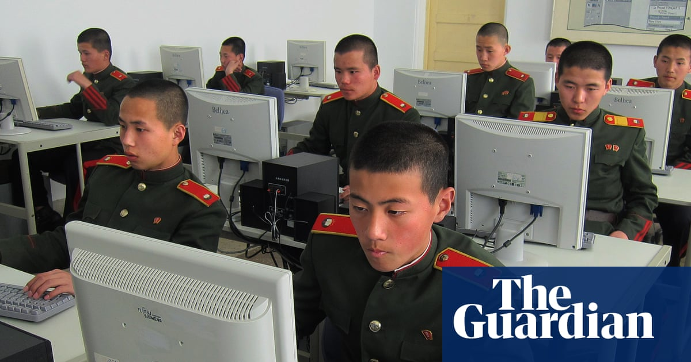

World · 01 Nov 2026
How crypto hacking funds isolated North Korea’s nuclear programme

Cryptocurrency theft is estimated to generate half of the country’s foreign currency income North Korea plays by its own rules. The isolated, secretive and autocratic country is largely cut off from the world’s economic system – but when it comes to generating foreign earnings it relies on some of t
Multiple independent publishers are reporting on the same development: How crypto hacking funds isolated North Korea’s nuclear programme.
The available reports place the development in the World category. The accounts were compared for agreement on the central event rather than simply shared names or broad topics.
One of the available reports describes the development this way: Cryptocurrency theft is estimated to generate half of the country’s foreign currency income North Korea plays by its own rules. The isolated, secretive and autocratic country is largely cut off from the world’s economic system – but when it comes to generating foreign earnings it relies on some of the world’s most sophisticated hacking. Experts, such as TRM Labs, quickly attributed the extraordinary $6.3bn (£4.7bn) Binance cryptocurrency theft to TraderTraitor, an elite North Korean hacking unit that has also been known as the Lazarus Group. Though the link may not be proven yet, the pattern of behaviour is familiar. Continue reading...
Readers should consult the linked source reports for additional context, updates and details that may change as the story develops.
Sources
This article was produced by the C. O. Eric AI Newsroom from the cited sources. It is published only after automated evidence and safety checks.